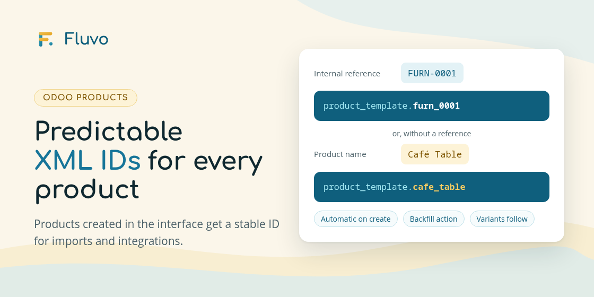
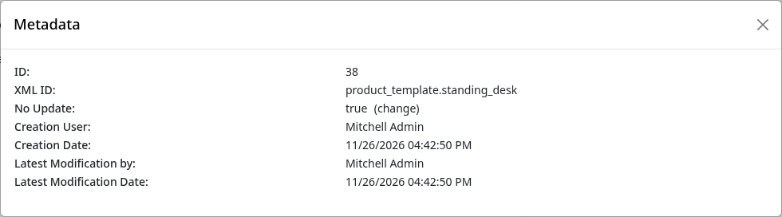
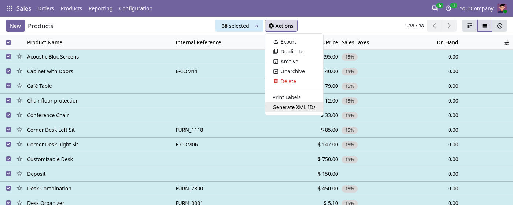
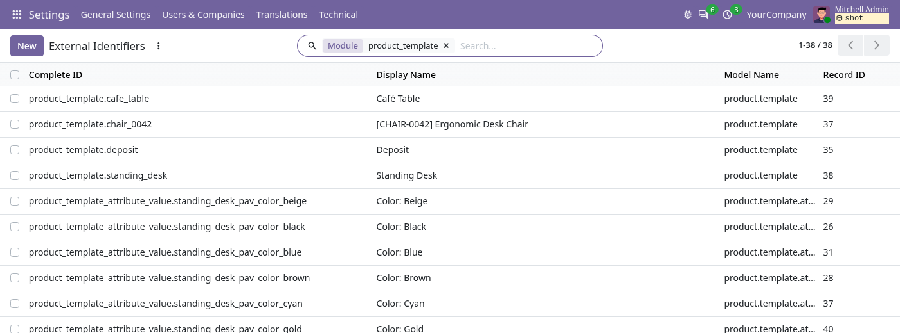

Products created in the interface get a stable external ID, so imports, exports and integrations can reference them without looking up database ids.

Every new product gets its XML ID when it is created: in the interface, by a quick create, or by an import without an ID column.
The ID is made from the internal reference, or from the name:
product_template.furn_0001 instead of a database
id that differs in every database.
With Attribute Value XML IDs installed, the attribute values of the product get a predictable XML ID too.
| Product | XML ID |
|---|---|
Internal reference FURN-0001 |
product_template.furn_0001 |
| No internal reference, name Desk Organizer (Large) | product_template.desk_organizer_large |
| No internal reference, name Café Table | product_template.cafe_table |

Go to Sales > Products > Products, switch to the list view, select the products and click Actions > Generate XML IDs. Products without an XML ID get one, and Odoo tells you how many of the selected products got one.

The XML IDs are regular external identifiers, in the
product_template module. Search them in
Settings > Technical > External Identifiers, or export
them with the ID column of any export. Below them, the
attribute values named by Attribute Value XML IDs.
